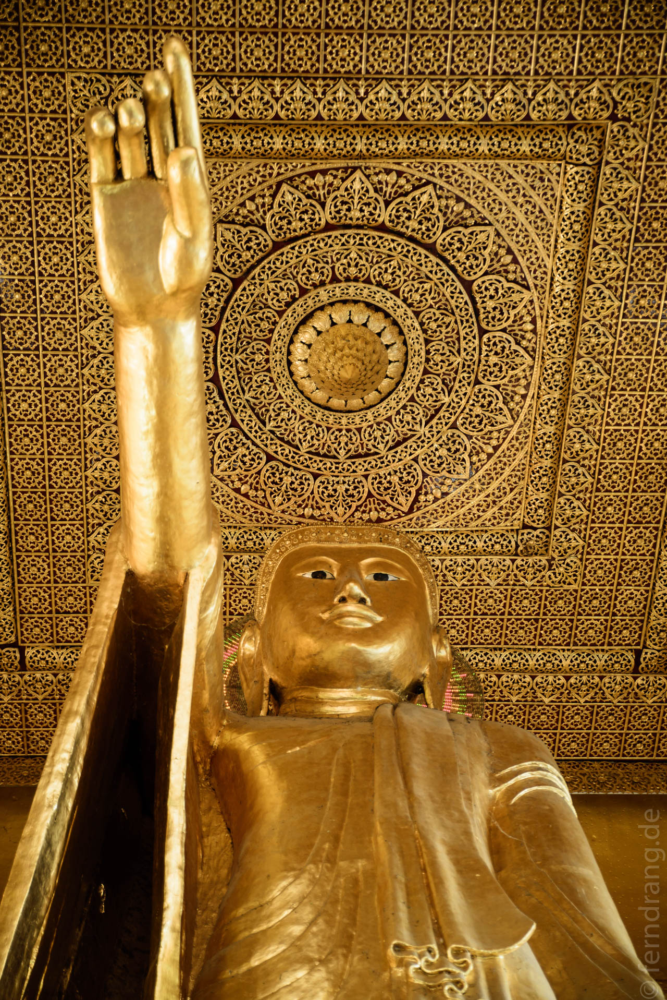
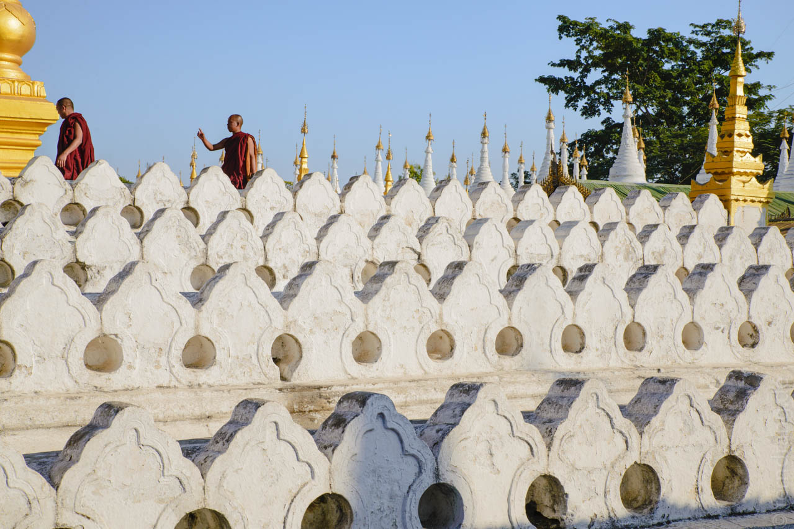
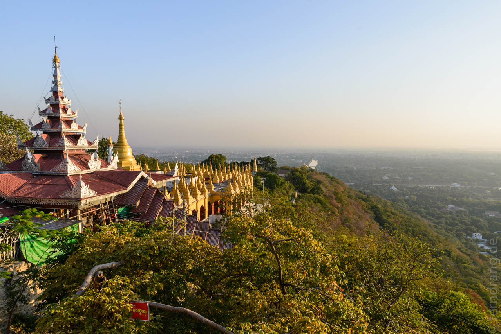
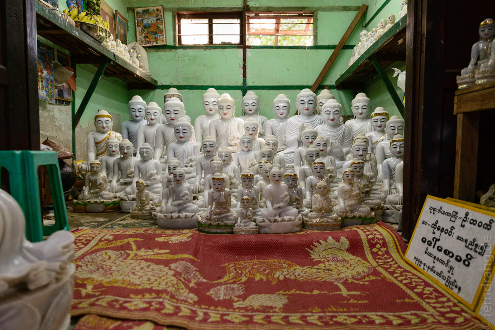
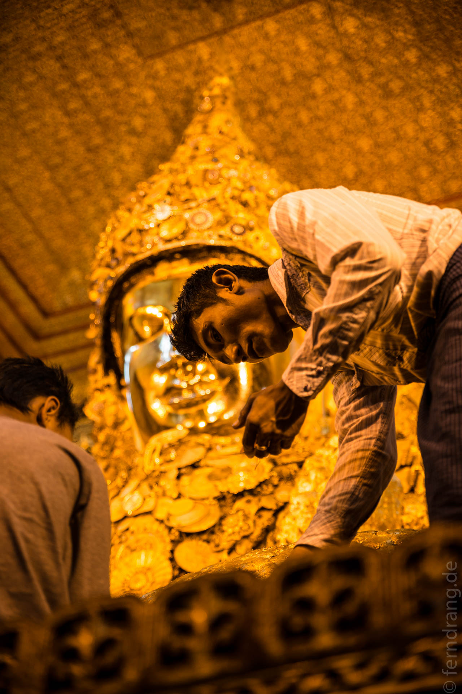

Mandalay ist das Kontrastprogramm zu Bangkok. Der Flughafen muss wohl selten mehr als eine Maschine abfertigen und auch die Einrichtungen wirken sehr rudimentär. Außerdem ist es an die 10 Grad kälter. Das kostenlose AirAsia Shuttle hat uns durch eine staubige, mit gold schimmernden Pagoden gespickten Ebene in die Stadt gebracht. Die Ausläufer der Hauptstraße ist von Wellblechhütten gesäumt, die von billigen Geschäftshäusern chinesischer Art abgelöst werden. Hier werden hauptsächlich Waren für den täglichen Gebrauch oder die Landwirtschaft angeboten. Das Zentrum, in dem der Bus hält, ist als solches nicht zu erkennen. Die kaputten Straßen, alte Autos und der Müll erinnern an Indien.
Vielleicht ist es der sagenhafte Name Mandalay, der Erwartungen schürt? Leider ist vom Zauber wenig zu spüren. Dafür wurden wir im Golden Mandalay Guesthouse sehr nett empfangen und haben ein großes Zimmer bezogen. Die Unterkunft liegt östlich der alten Kaiserstadt und ist damit recht weit ab vom Zentrum. Wie wir bei unserem ersten Ausflug zum Mandalay Hill feststellen mussten, sind Spaziergänge hier wenig reizvoll. Die Stadt ist sehr weitläufig und hat ein echtes Smok-Problem.
Es gehört zum Pflichtprogramm, abends auf den Hügel zu steigen. Eine überdachte Treppe führt in vielen Etappen hinauf, vorbei an geräumigen Zwischenstationen, wo sich Familien mit ihren Ständen eingerichtet haben. Es gibt auch immer mal wieder einen Buddha zum Beten, weshalb man die Treppe barfuß hochsteigen muss. Nach dutzenden Stationen, die durch ihre Fliesen etwas von sakralen Haltestellen haben, wird man mit einem überwältigenden Blick belohnt.
Man blickt über den Wald aus 700 weißen Stupas der Kuthodaw-Pagode, von denen jede eine marmorne Buchseite enthält; über die kilometerlange Palastmauer, die von einem breiten Wassergraben umgeben ist; über das hässliche, große Hotel, das direkt am Fuß des Mandalay Hills steht; über erstaunlich viel Grün und die Häuser der Stadt, die von hier aus viel zu weit weg erscheinen. Bei Sonnenuntergang tauchen überall Rauch- und Nebelschwaden wie aus dem Nichts auf und verwandeln die Szenerie in ein Märchenland. Die Sonne taucht den Irrawaddy in flüssiges Gold. Wenn das Schauspiel vorbei ist, wird es schnell feucht und kalt. Wir haben schnell gelernt, dass winterliche Kleidung hier sehr praktisch ist.
 
Mit Einbruch der Dunkelheit wirkt die Stadt fast tibetisch. Kaum Beleuchtung auf den kaputten Straßen, die Menschen sind in dicke Jacken und Mützen verpackt und der Geruch von Feuer ringt mit dem Smog der Autos.
Am nächsten Morgen haben wir uns klapprige Fahrräder geliehen, um nach Amarapura südlich von M. zu fahren. Dabei wollten wir die Stadt en passant besichtigen. Zuerst hat sich geklärt, warum vom Hügel aus so viel unpassendes Grün zu sehen war: Die alte Kaiserstadt ist in ein Dorf für die Armee verwandelt worden, das aus flachen Holzhäusern mit Gärten und Alleen besteht. Besucher dürfen nur auf geradem Weg zur Replikation des zentralen Palastgebäudes. Das ist aus Wellblech und golden angesprühtem Holz gebaut und dementsprechend wenig eindrucksvoll. Dem Stadtleben tut das 2x2 km große Sperrgebiet mitten im Zentrum auch nicht besonders gut.
An der völlig überlaufenen Ausfallstraße nach Süden liegt die Mahamuni-Pagode. Wie viele Pagoden hier ist sie nur durch eine Art überdachten Tunnel zugänglich, der von mageren Ständen für religiöses Zubehör oder Snacks vollgestopft ist. In den Galerien um das Heiligtum tummeln sich jede Menge Betenden, die sich daran machen den großen Buddha mit Blattgold zu überziehen. Das ist an sich nichts besonderes, aber hier wird das mit solchem Eifer betrieben, dass der Buddha wie mit Geschwüren mit dicken goldenen Wülsten überzogen ist. Das ist übrigens ein Spaß, den die so harmonischen Buddhisten ihren weiblichen Gläubigen verbieten.
 